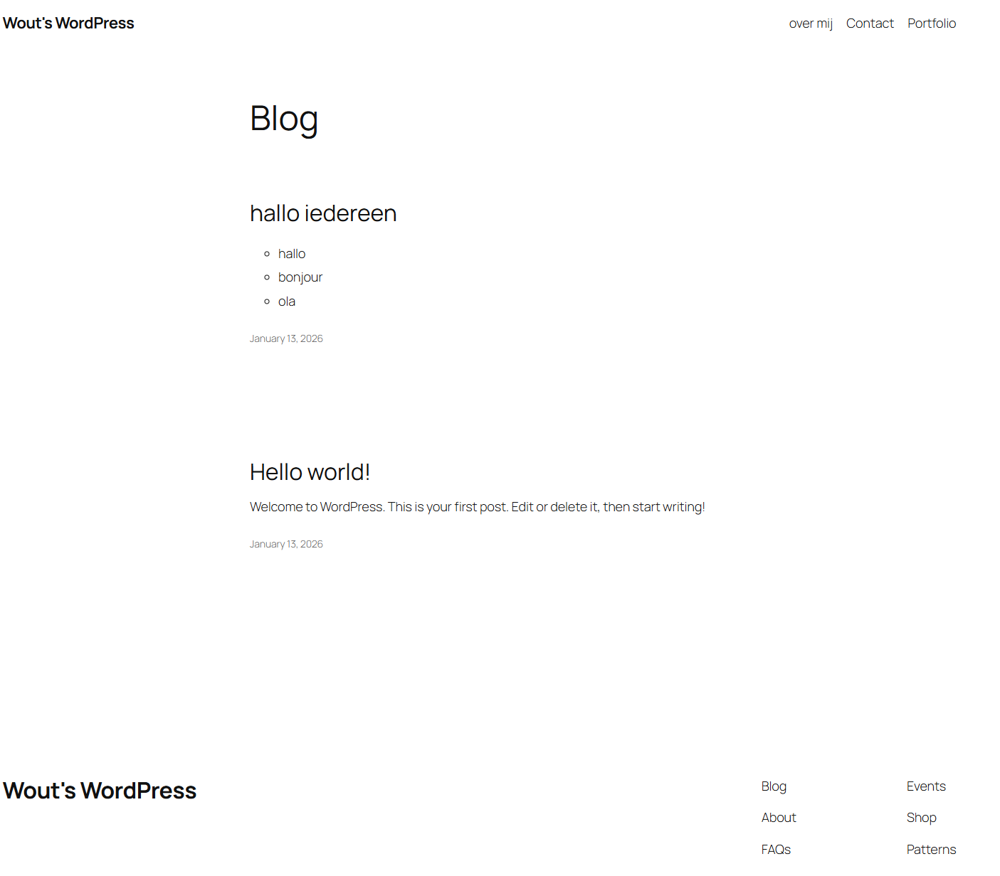

Lab xx - Wordpress
Goals of the exercise
- Create a new subdomain and secure it with SSL/TLS.
- Be able to install WordPress on your own hosting account.
- Be able to create posts and categories.
- Add a contact form to your website.
- Adjust general WordPress settings.
- Create your own menu in WordPress.
- Personalize your own WordPress website.
- Gain insight into the background of a CMS (database, server-side, client-side).

Description
You will set up a WordPress website on your hosting account by creating a secure subdomain, installing WordPress, and exploring how it works in the database and file system. Then you log in to the dashboard, create categories, posts, and pages (including an About page and a Contact page with a plugin), and customize the site’s menu and appearance. This gives you practical experience with managing and personalizing a CMS‑based website
Related links
Reflection
-
Waauw!!
Creating the subdomein for the wordpress website.
-
Aauuw!
Making a cool design with wordpress is difficult.
-
Not sure?
Finding my way around the interface of WordPress.